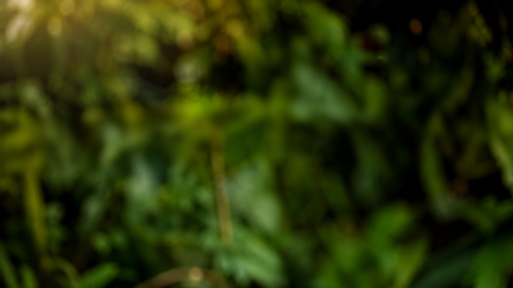
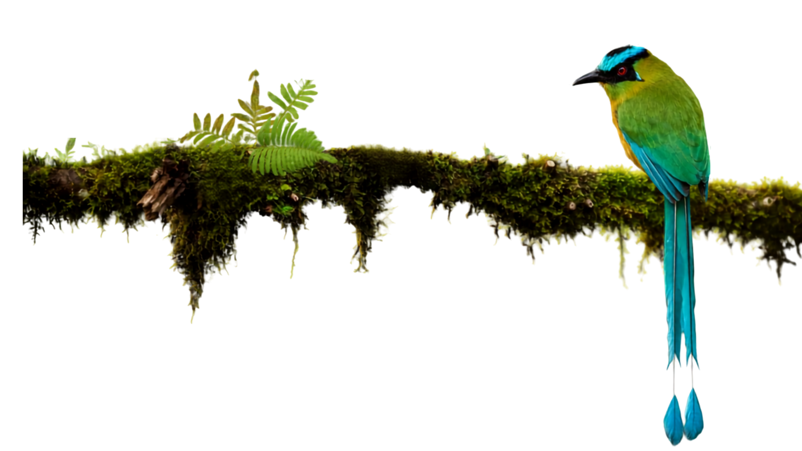
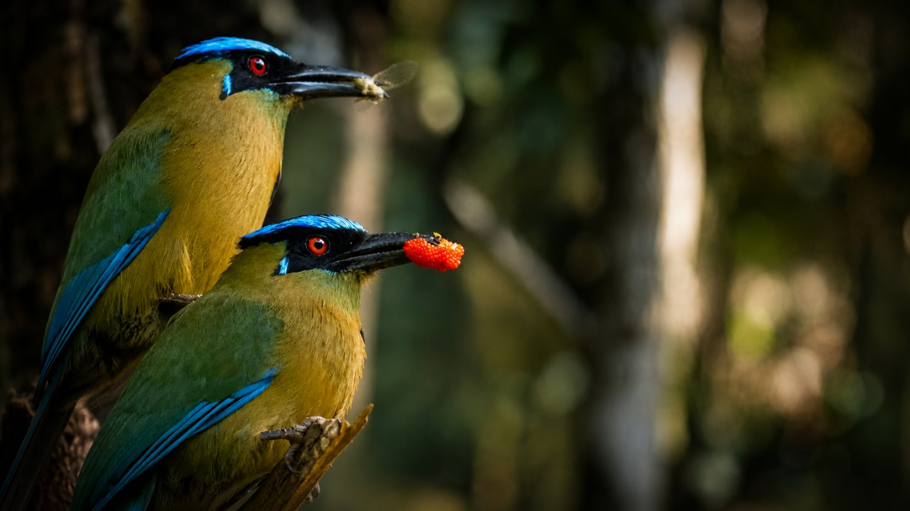
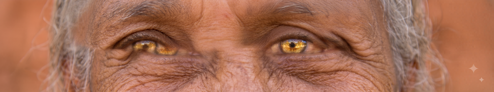

Bonito · Mato Grosso do Sul
Da terra às mãos, das mãos para o mundo — o ofício do artesão de Bonito e o avistamento de aves do cerrado, lado a lado.
Conheça o projeto
Role
01 · O projeto
O ofício tem raiz — e a raiz precisa de cuidado.
O Marambaia Eco Criativa forma artesãos locais em Bonito, Mato Grosso do Sul, e integra a comunidade ao ecoturismo da serra da Bodoquena.
Da matéria-prima colhida no cerrado ao produto final na feira — quatro etapas que sustentam o ofício como fonte de renda estável.
↳ mova o cursor para revelar a trança de palha
02 · Galeria
O que sai das bancadas.
Cinco linguagens do ofício e da paisagem em Bonito. Navegue pelas peças.


03 · A serra que canta
Aviturismo
A serra da Bodoquena desperta em centenas de vozes.
O olhar
A espera vira encontro — cada ave, uma descoberta.
O destino
Observar para preservar a mata que abriga o voo.

03 · Aviturismo
Onde o cerrado ganha asas.
Bonito e a serra da Bodoquena estão entre os melhores destinos de observação de aves do Brasil. O aviturismo une renda e conservação — cada avistamento é um novo motivo para manter a floresta de pé.
↳ mova o cursor para revelar as aves
Acervo em vídeo



A seguir · Prestação de Contas
Por trás de cada real, um olhar que a gente transforma.
↓ role para ver os números